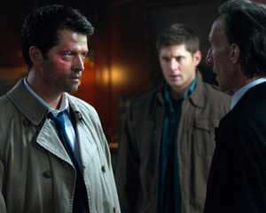

>
Season 15 :
- 20. Carry On
- 19. Inherit the Earth
- 18. Despair
- 17. Unity
- 16. Drag Me Away (From You)
- 15. Gimme Shelter
- 14. Last Holiday
- 13. Destiny's Child
- 12. Galaxy Brain
- 11. The Gamblers
- 10. The Heroes' Journey
- 09. The Trap
- 08. Our Father, Who Aren't in Heaven
- 07. Last Call
- 06. Golden Time
- 05. Proverbs 17:3
- 04. Atomic Monsters
- 03. The Rupture
- 02. Raising Hell
- 01. Back and to the Future
- 00. The Long Road Home

Season 14 :
- 20. Moriah
- 19. Jack in the Box
- 18. Absence
- 17. Game Night
- 16. Don't Go In the Woods
- 15. Peace of Mind
- 14. Ouroboros
- 13. Lebanon
- 12. Prophet and Loss
- 11. Damaged Goods
- 10. Nihilism
- 09. The Spear
- 08. Byzantium
- 07. Unhuman Nature
- 06. Optimism
- 05. Nightmare Logic
- 04. Mint Condition
- 03. The Scar
- 02. Gods and Monsters
- 01. Stranger in a Strange Land
Season 13 :
- 23. Let the Good Times Roll
- 22. Exodus
- 21. Beat the Devil
- 20. Unfinished Business
- 19. Funeralia
- 18. Bring 'em Back Alive
- 17. The Thing
- 16. ScoobyNatural
- 15. A Most Holy Man
- 14. Good Intentions
- 13. Devil's Bargain
- 12. Various & Sundry Villans
- 11. Breakdown
- 10. Wayward Sisters
- 09. The Bad Place
- 08. The Scorpion and the Frog
- 07. War of the Worlds
- 06. Tombstone
- 05. Advanced Thanatology
- 04. The Big Empty
- 03. Patience
- 02. The Rising Son
- 01. Lost and Found
Season 12 :
- 23. All Along the Watchtower
- 22. Who We Are
- 21. There's Something About Mary
- 20. Twigs & Twine & Tasha Banes
- 19. The Future
- 18. The Memory Remain
- 17. The British Invasion
- 16. Ladies Drink Free
- 15. Somewhere Between Heaven and Hell
- 14. The Raid
- 13. Family Feud
- 12. Stuck in the Middle (With You)
- 11. Regarding Dean
- 10. Lily Sunder Has Some Regrets
- 09. First Blood
- 08. LOTUS
- 07. Rock Never Dies
- 06. Celebrating the Life of Asa Fox
- 05. The One You've Been Waiting For
- 04. American Nightmare
- 03. The Foundry
- 02. Mamma Mia
- 01. Keep Calm and Carry On
Season 11 :
- 23. Alpha and Omega
- 22. We Happy Few
- 21. All in the Family
- 20. Don't Call Me Shurley
- 19. The Chitters
- 18. Hell's Angel
- 17. Red Meat
- 16. Safe House
- 15. Beyond the Mat
- 14. The Vessel
- 13. Love Hurts
- 12. Don't You Forget About Me
- 11. Into the Mystic
- 10. The Devil in the Details
- 09. O Brother, Where Are Thou?
- 08. Just My Imagination
- 07. Plush
- 06. Our Little World
- 05. Thin Lizzie
- 04. Baby
- 03. The Bad Seed
- 02. Form and Void
- 01. Out of the Darkness, Into the Fire

Season 10 :
- 23.Brother's Keeper
- 22.The Prisoner
- 21.Dark Dynasty
- 20.Angel Heart
- 19.The Werther Project
- 18.Book of the Damned
- 17.Inside Man
- 16.Paint it Black
- 15.The Things They Carried
- 14.The Executioner's Song
- 13.Halt & Catch Fire
- 12.About a Boy
- 11.There's No Place Like Home
- 10.The Hunter Games
- 09.The Things We Leave Behind
- 08.Hibbing 911
- 07.Girls, Girls, Girls
- 06.Ask Jeeves
- 05.Fan Fiction
- 04.Paper Moon
- 03.Soul Survivor
- 02.Reichenbach
- 01.Black
Season 9 :
- 23.Do You Believe in Miracles
- 22.Stairway to Heaven
- 21.King of the Damned
- 20.Bloodlines
- 19.Alex Annie Alexis Ann
- 18.Meta Fiction
- 17.Mother's Little Helper
- 16.Blade Runners
- 15.Fish Out of Water
- 14.Captives
- 13.The Purge
- 12.Sharp Teeth
- 11.First Born
- 10.Road Trip
- 09.Holy Terror
- 08.Rock and a Hard Place
- 07.Bad Boys
- 06.Heaven Can't Wait
- 05.Doggie Style
- 04.Slumber Party
- 03.I'm No Angel
- 02.Devil May Care
- 01.I Think I'm Gonna Like It Here
Season 8 :
- 23 .Sacrifice
- 22. Clip Show
- 21. The Great Escapist
- 20. Pac-Man Fever
- 19. Taxi Driver
- 18. Freaks and Geeks
- 17. Goodbye Stranger
- 16. Remember the Titans
- 15. Man's Best Friend with Benefits
- 14. Trial and Error
- 13. Everybody Hates Hitler
- 12. As Time Goes By
- 11. LARP and the Real Girl
- 10. Torn and Frayed
- 09. Citizen Fang
- 08. Hunteri Heroici
- 07. A Little Slice of Kevin
- 06. Southern Comfort
- 05. Blood Brother
- 04. Bitten
- 03. Heartache
- 02. What's Up, Tiger Mommy?
- 01. We Need to Talk About Kevin

Season 7 :
- 23. Survival of the Fittest
- 22. There Will Be Blood
- 21. Reading is Fundamental
- 20. The Girl With the Dungeons and Dragons Tattoo
- 19. Of Grave Importance
- 18. Party on, Garth
- 17. The Born-Again Identity
- 16. Out With The Old
- 15. Repo Man
- 14. Plucky Pennywhistle's Magic Menagerie
- 13. The Slice Girls
- 12. Time After Time
- 11. Adventures in Babysitting
- 10. Death's Door
- 09. How To Win Friends And Influence Monsters
- 08. Season 7, Time for a Wedding!
- 07. The Mentalists
- 06. Slash Fiction
- 05. Shut Up, Dr. Phil
- 04. Defending Your Life
- 03. The Girl Next Door
- 02. Hello, Cruel World
- 01. Meet the New Boss
Season 6 :
- 22. The Man Who Knew Too Much
- 21. Let It Bleed
- 20. The Man Who Would Be King
- 19. Mommy Dearest
- 18. Frontierland
- 17. My Heart Will Go On
- 16. ...And Then There Were None
- 15. The French Mistake
- 14. Mannequin 3: The Reckoning
- 13. Unforgiven
- 12. Like a Virgin
- 11. Appointment in Samarra
- 10. Caged Heat
- 09. Clap Your Hands If You Believe...
- 08. All Dogs Go to Heaven
- 07. Family Matters
- 06. You Can't Handle the Truth
- 05. Live Free or Twihard
- 04. Weekend at Bobby's
- 03. The Third Man
- 02. Two and a Half Men
- 01. Exile On Main St.
Season 5 :
- 22. Swan Song
- 21 .Two Minutes to Midnight
- 20. The Devil You Know
- 19. Hammer of the Gods
- 18. Point of No Return
- 17. 99 Problems
- 16. Dark Side of the Moon
- 15. Dead Men Don't Wear Plaid
- 14. My Bloody Valentine
- 13. The Song Remains the Same
- 12. Swap Meat
- 11. Sam, Interrupted
- 10. Abandon All Hope...
- 09. The Real Ghostbusters
- 08. Changing Channels
- 07. The Curious Case of Dean Winchester
- 06. I Believe the Children Are Our Future
- 05. The End
- 04. Fallen Idols
- 03. Free to Be You and Me
- 02 Good God, Y'all!
- 01. Sympathy for the Devil
Season 4 :
- 22. Lucifer Rising
- 21. When the Levee Breaks
- 20. The Rapture
- 19. Jump the Shark
- 18. The Monster at the End of This Book
- 17. It's a Terrible Life
- 16. On the Head of a Pin
- 15. Death Takes a Holiday
- 14. Sex and Violence
- 13. After School Special
- 12. Criss Angel Is a Douchebag
- 11. Family Remains
- 10. Heaven and Hell
- 09. I Know What You Did Last Summer
- 08. Wishful Thinking
- 07. It's the Great Pumpkin, Sam Winchester
- 06. Yellow Fever
- 05. Monster Movie
- 04. Metamorphosis
- 03. In the Beginning
- 02. Are You There God? It's Me, Dean Wincheste
- 01. Lazarus Rising
Season 3 :
- 16. No Rest For The Wicked
- 15. Time Is On My Side
- 14. Long-Distance Call
- 13. Ghostfacers
- 12. Jus In Bello
- 11. Mystery Spot
- 10. Dream A Little Dream Of Me
- 09. Malleus Maleficarum
- 08. A Very Supernatural Christmas
- 07. Fresh Blood
- 06. Red Sky At Morning
- 05. Bedtime Stories
- 04. Sin City
- 03. Bad Day at Black Rock
- 02. The Kids Are Alright
- 01. The Magnificent Seven
Season 2 :
- 22. All Hell Breaks Loose (2)
- 21. All Hell Breaks Loose (1)
- 20. What Is and What Should Never Be
- 19. Folsom Prison Blues
- 18. Hollywood Babylon
- 17. Heart
- 16. Roadkill
- 15. Tall Tales
- 14. Born Under A Bad Sign
- 13. Houses of the Holy
- 12. Nightshifter
- 11. Playthings
- 10. Hunted
- 09. Croatoan
- 08. Crossroad Blues
- 07. The Usual Suspects
- 06. No Exit
- 05. Simon Said
- 04. Children Shouldn't Play With Dead Things
- 03. Bloodlust
- 02. Everybody Loves A Clown
- 01. In My Time of Dying
Season 1 :
- 22. Devil's Trap
- 21. Salvation
- 20. Dead Man's Blood
- 19. Provenance
- 18. Something Wicked
- 17. Hell House
- 16. Shadow
- 15. The Benders
- 14. Nightmare
- 13. Route 666
- 12. Faith
- 11. Scarecrow
- 10. Asylum
- 09. Home
- 08. Bugs
- 07. Hook Man
- 06. Skin
- 05. Bloody Mary
- 04. Phantom Traveler
- 03. Dead In The Water
- 02. Wendigo
- 01. Pilot